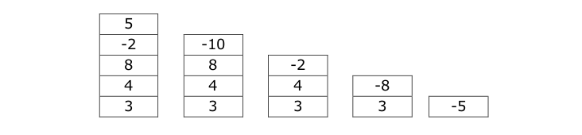

Temario
-
 Unidad 2-Comprendiendo los Algoritmos.
Unidad 2-Comprendiendo los Algoritmos.


Arreglos y Matrices
Arreglos
Un arreglo (también llamado vector) es una estructura de datos, o más técnicamente, un espacio de memoria que permite almacenar una colección de elementos, todos del mismo tipo. Conviene imaginar un arreglo como una secuencia contigua de celdas (espacios de memoria), o casillas, en cada una de las cuales se puede guardar un elemento de la colección. Además, es usual dibujarlo como lo ilustra la figura siguiente:
Esta figura representa un arreglo de siete casillas cada una de las cuales se puede utilizar para guardar un dato. La dimensión o tamaño de un arreglo es el número de casillas que lo conforman. Debe ser claro, entonces, que la figura anterior corresponde a un arreglo de dimensión 7. Cada una de las casillas de un arreglo tiene asociado un número que la identifica de manera única. A este número se le llama índice o dirección.
En la figura anterior, debajo de cada casilla, aparece su índice. En lenguajes como C, C++ y java, la primera casilla del arreglo tiene índice 0, la segunda tiene índice 1, la tercera índice 2, y así sucesivamente. Es muy importante tener presente que si el arreglo es de dimensión N, la última casilla tiene índice N-1. Los lenguajes de programación permiten que el programador declare arreglos de cualquier tipo y prácticamente de cualquier tamaño. En el pseudocódigo, un arreglo se declara usando el siguiente formato o plantilla:
NOMBRE : arreglo [N] de TIPO
En este formato aparecen en mayúsculas y entre los caracteres < y > los componentes que el programador debe determinar. Así por ejemplo, si se quiere declarar un arreglo con nombre letras, de dimensión 15 y que pueda almacenar datos de tipo caracter, se debe escribir la siguiente línea. Ejemplo: letras : arreglo [15] de caracter
Si se necesita guardar las ventas diarias de una tienda durante la última semana, se puede declarar el siguiente arreglo:
ventas : arreglo [7] de real
Si se quiere guardar las notas que ha sacado un estudiante en los cinco talleres y en los cinco laboratorios del curso de Programación de Computadores se pueden declarar los siguientes arreglos:
talleres : arreglo [5] de real
laboratorios : arreglo [5] de real
Matrices
Esta figura representa un matriz de tres filas (numeradas verticalmente de 0 a 2) y cuatro columnas (numeradas horizontalmente de 0 a 3). En cada una de las 12 celdas o casillas se puede guardar un dato. La dimensión o tamaño de una matriz es el número filas por el número de columnas. Debe ser claro entonces que la figura anterior es la gráfica de una matriz de dimensión 3x4. La numeración de las filas y las columnas determina que cada una de las casillas de una matriz tiene asociados dos números que la identifican de manera única. A estos números se les llama índice de fila e índice de columna, respectivamente.
En el pseudocódigo, y también en C y C++, las filas y las columnas se numeran desde 0. Los lenguajes como C y C++, permiten que el programador declare matrices de cualquier tipo y prácticamente de cualquier tamaño. En el pseudocódigo, un matriz se declara usando el siguiente formato:
NOMBRE : matriz [N][M] de TIPO
En este formato aparecen en mayúsculas y entre los caracteres < y > los componentes que el programador puede determinar. Así por ejemplo, si se quiere declarar una matriz con nombre mat, de dimensión 5x4 y que pueda almacenar datos de tipo caracter, se debe escribir la siguiente línea. Ejemplo: mat : matriz [5][4] de caracter
Según el formato anterior, el programador debe bautizar la matriz (ponerle un nombre significativo), debe decir cuál es su dimensión, y también debe decir de qué tipo son los elementos que almacenará.
Implementaciones
Se tienen estructuras de datos definidas por el usuario que se utilizan generalmente para simplificar ciertas operaciones de programación mediante arrays: pilas y colas.
Las Pilas son estructuras de datos que tienen dos operaciones básicas: push (para insertar un elemento) y pop (para extraer un elemento). Su característica fundamental es que al extraer se obtiene siempre el último elemento que acaba de insertarse. Por esta razón también se conocen como estructuras de datos LIFO (del inglés Last In First Out) que quiere decir: el último en entrar es el primero en salir. Una posible implementación mediante listas enlazadas sería insertando y extrayendo siempre por el principio de la lista.

Las pilas se aplican en muchas aplicaciones que utilizamos con frecuencia. Por ejemplo, la gestión de ventanas en Windows (cuando cerramos una ventana siempre recuperamos la que teníamos detrás). Otro ejemplo es la evaluación general de cualquier expresión matemática para evitar tener que calcular el número de variables temporales que hacen falta. Ejemplo: 3+4-(8-2*5)
Las ColasTambién llamadas estructuras FIFO (del inglés First In First Out), que quiere decir: el primero que entra es el primero que sale. A diferencia de la pila, esta permite la salida de elementos conforme van entrando a la estructura.
Si se desea sacar un elemento seria en el orden estricto en el que fueron almacenados. En este caso, solo podrá eliminarse en numero 5 pues se encuentra en el índice cero, demostrándose que fue el primero en almacenarse.
Colas simples: Se inserta por un sitio y se saca por otro, en el caso de la cola simple se inserta por el final y se saca por el principio. Para gestionar este tipo de cola hay que recordar siempre cual es el siguiente elemento que se va a leer y cuál es el último elemento que se ha introducido.
Colas circulares: En las colas circulares se considera que después del último elemento se accede de nuevo al primero. De esta forma se reutilizan las posiciones extraídas, el final de la cola es a su vez el principio, creándose un circuito cerrado.
Las aplicaciones de los Arreglos y las Matrices puede verse tambien en los metodos de ordenacion y metodos de busqueda, los cuales "ordenan" los elementos (de acuerdo a un orden); y "buscan" un elemento especificado por el usuario.